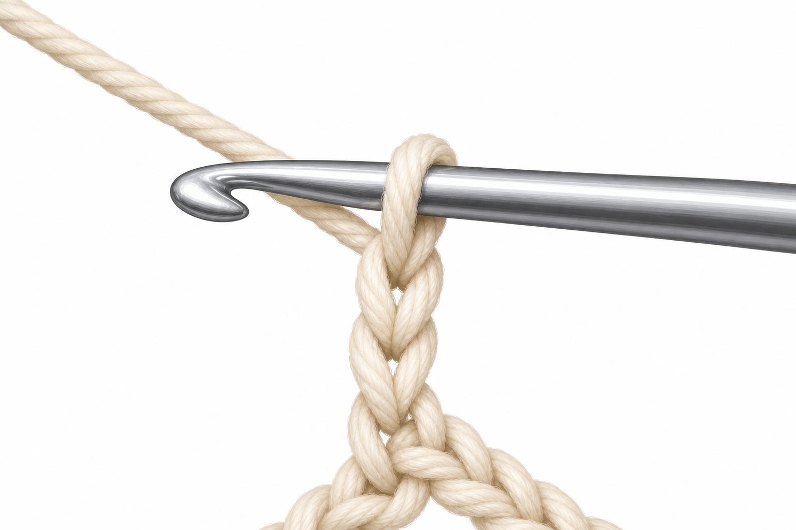
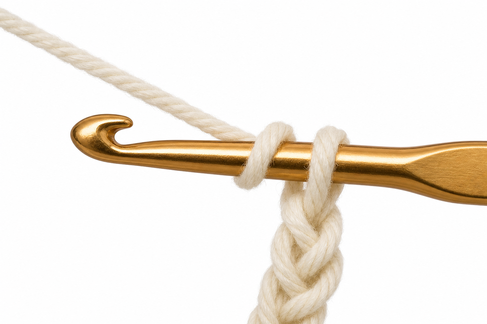
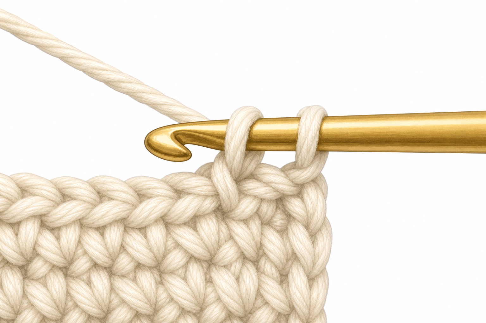
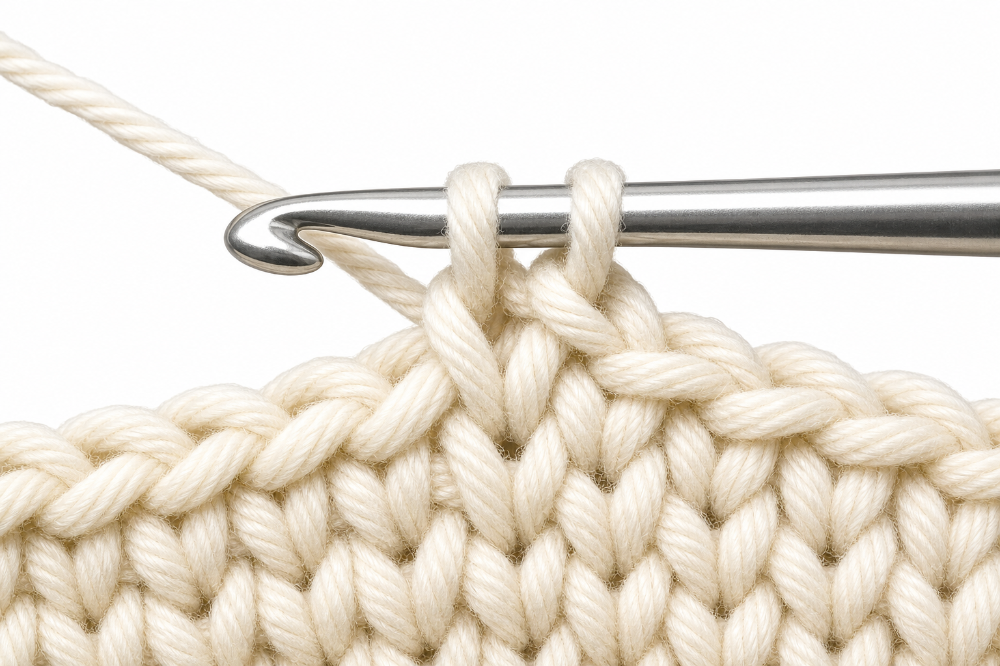
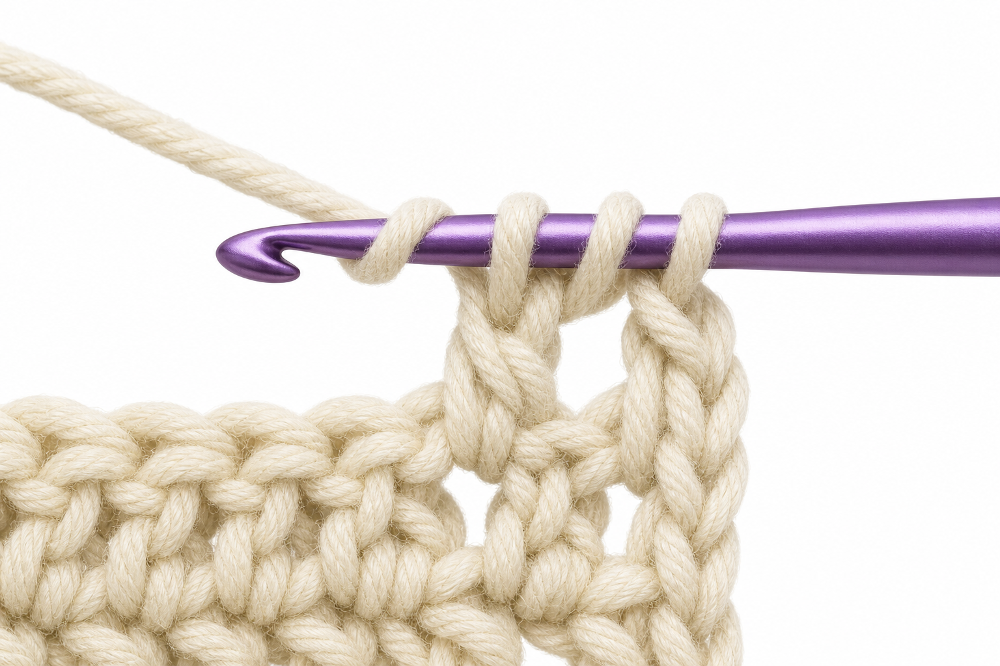
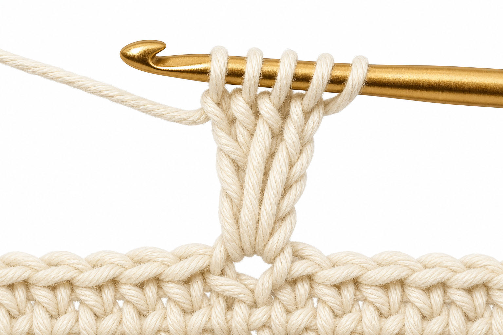
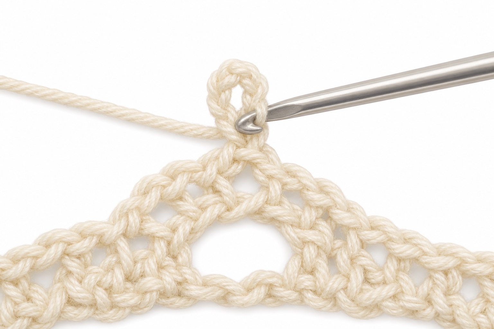

Chain
Dictionary: Chain (ch)
The moment the new loop slides through—your working yarn path and the hook tip should read as one clean motion.

Yarn over
Dictionary: Yarn over (yo)
Before many tall stitches, this wrap is easy to rush past on camera—here the strand lies clearly over the shaft.

Slip stitch
Dictionary: Slip stitch (sl st)
Joining and traveling stitches hide in a blink—this frame shows both loops about to leave together.

Single crochet
Dictionary: Single crochet (sc)
The “two loops on the hook” beat before the last pull-through is the anchor of most beginner fabric.

Double crochet
Dictionary: Double crochet (dc)
The classic three-loop stage: where double crochet either clicks or tangles—height comes from the first yarn over.

Treble crochet
Dictionary: Treble crochet (tr)
Extra yarn overs mean more loops in a stack—lace motifs depend on seeing this ladder clearly.

Picot
Dictionary: Picot
A picot is tiny; video rarely holds focus long enough to see how the slip stitch anchors the bump.
